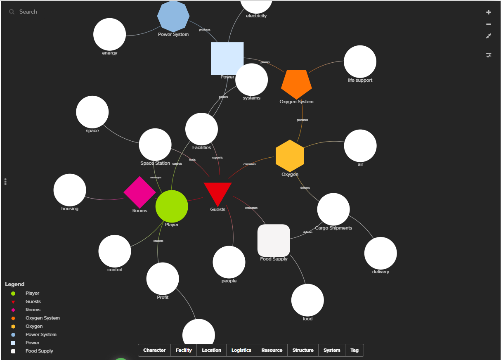

Game Review: Space Hotel
I played Space Hotel, which is a space management game where the player runs a hotel in space. The game is about managing resources like oxygen, food, water, power, and tools while trying to keep the station running. The graphics are simple, but the game still feels interesting because of the space setting and music. It feels like you are really managing a small station in space.
There are not many story characters in the game, but the guests are still important because you have to keep them safe and happy. If resources get too low, the station can have problems and the guests can become unhappy. This makes the player feel responsible for the people on the station.
One thing I liked about the game was how every resource matters. The player has to build rooms, manage supplies, and watch different systems at the same time. If you run out of oxygen or food, the station can fail quickly. The controls are simple, but the game becomes harder as the station grows.
The game can also be challenging because players always need to plan ahead. Expanding the station too fast can cause you to lose resources and fail. I liked how the game makes the player think carefully before making decisions. Even though the game has a few bugs and could use clearer instructions, I still enjoyed it because it was fun managing the station and solving problems.
Screenshots
Main menu and introduction screen.

Managing the station and resources.

Another view of the gameplay.

Kumu Network
This Kumu map shows the main parts of the game and how they connect to each other. It includes resources, guests, rooms, and systems used in Space Hotel.
